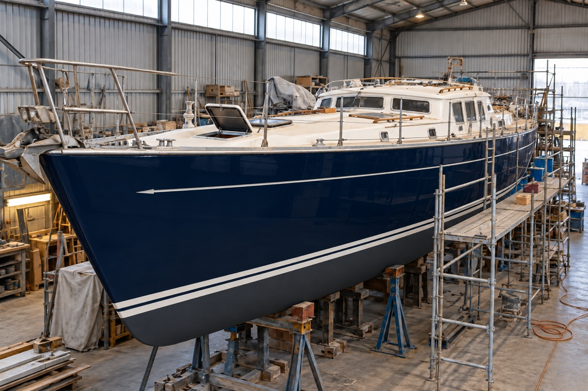

Independent technical support · New builds & major refits
New Yacht Builds & Owner Representation
A boatbuilding perspective on your side of the yard.
Commissioning a yacht or planning a substantial refit? I help you understand the work, follow construction progress and address technical questions before they become expensive changes.
Work directly with Tony Gagliardo for independent owner representation, agreed yard visits and practical advice from design and drawing review before any material is cut through to delivery.
Design. Construction. Real-world use.
Experience that reaches beyond the inspection
My background includes involvement in the design of pleasure and commercial vessels from 30 to 250 feet and oversight of vessels constructed in wood, aluminium, steel and composites.
I have worked in a small three-person design team and for a major production boat manufacturer, and contributed to the development of machine-produced mould tooling and closed moulding techniques.
That experience helps connect what is on the drawing, what is happening in the yard and how the finished yacht will be operated and maintained.

Your interests, clearly represented
If you live overseas or cannot attend the yard regularly, you need useful information about the decisions being made on your behalf. I work for you within an agreed scope, communicate directly with the builder or yard and bring technical issues to your attention in clear language.
International owners, including North American buyers commissioning yachts abroad, can arrange a combination of remote document review and on-site attendance by location and availability.
Where I can help during a yacht build or refit
Design & drawing review — before material is cut
I can review the yacht’s design, drawings and build specification before any material is cut. Work through layout, construction details, systems arrangements, equipment choices and maintenance access early, so questions and proposed changes can be addressed before fabrication begins.
Construction-stage visits
Arrange visits at useful milestones to review accessible construction and workmanship against the agreed specification. Raise concerns while the work is still accessible and changes can be discussed.
Systems & installation advice
Review propulsion, electrical and charging arrangements, HVAC and equipment installation proposals, with attention to access, serviceability and the way you intend to use the yacht.
Progress reports & issue tracking
Receive clear written findings and photographs from agreed visits. Keep a practical record of technical questions, proposed changes and items requiring follow-up with the yard.
Major refit support
Review repair and upgrade proposals, work priorities and equipment choices. Discuss findings as work progresses and help distinguish essential corrective work from optional improvements.
Pre-delivery inspection & sea trials
Arrange inspection and trial attendance to assess accessible workmanship, systems operation and outstanding items before handover. Document findings for discussion with the builder and agree any follow-up inspection.
Support matched to the stage you are at
- Start with the project. Tell me about the yacht, builder or yard, location, current stage and expected delivery date. Share your priorities and any immediate concerns.
- Agree the work. We define the design drawings and specifications to review, attendance needed, reporting, availability and fees. You can engage me for one focused review or continuing support through agreed milestones.
- Keep decisions informed. I report what I find, explain the implications and discuss practical next steps with you and the yard.
- Prepare for delivery. Review outstanding items, arrange agreed inspections or sea-trial attendance and document the technical matters that need attention at handover.
A clear scope and direct professional communication
Technical owner representation, design work and statutory or class surveys each have their own scope. Where your project needs specialist design or approval work, we identify it early and agree the appropriate next step.
Yard attendance is arranged around location, build stage and availability. Scope, reporting, travel arrangements and fees are agreed before work begins.
Explore naval architecture and technical design or refit and equipment consulting.
For yacht brokers and buyer advisers
Have a client commissioning a new yacht or taking on a major refit? Introduce them to Tony, or send the project outline and intended delivery date. I can discuss independent technical support with you and the owner and define a useful starting point.